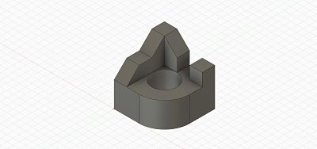
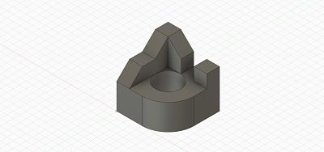
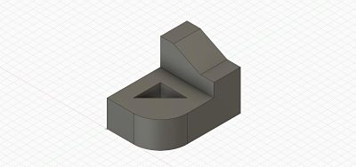
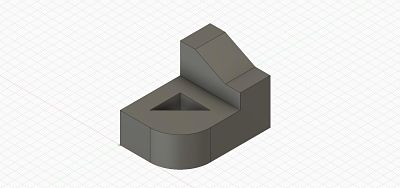

In this rotation, we learned the basics of Computer Aided Design (CAD). CAD is digital software that allows the user to design and create objects on their computer which can then be translated into the real world. The CAD software that we used is called Fusion 360.
Our first task was to design six different objects from a list that was given to us. Overall, the first one took me a while to figure out but all subsequent ones came very quickly. Once I figured out how to draw proper arcs and to extrude different segments of the design, I was able to quickly finish the task. All of these objects are displayed below.
 

 
Images 1-6: Screenshots of the six different objects.

Images 1-6: Screenshots of the six different objects.
For our final CAD project, I chose to design a laptop stand in Fusion 360 with the assistance of a video tutorial. In total, it took me about two hours to fully complete and polish. The first step was to design one of the legs of the stand. After I got that done, I mirrored it to create two legs. Now that there were two legs, I created a top on the plane created by the two legs. Once the top was finished, I created two supports on the bottom to reduce the wobbling of the object. After being stumped many times in the design process, I can finally say that I'm finished with the laptop stand and I believe it would be of great utility if it existed in the real world.
Images 7 & 8: Screenshots of the stand.